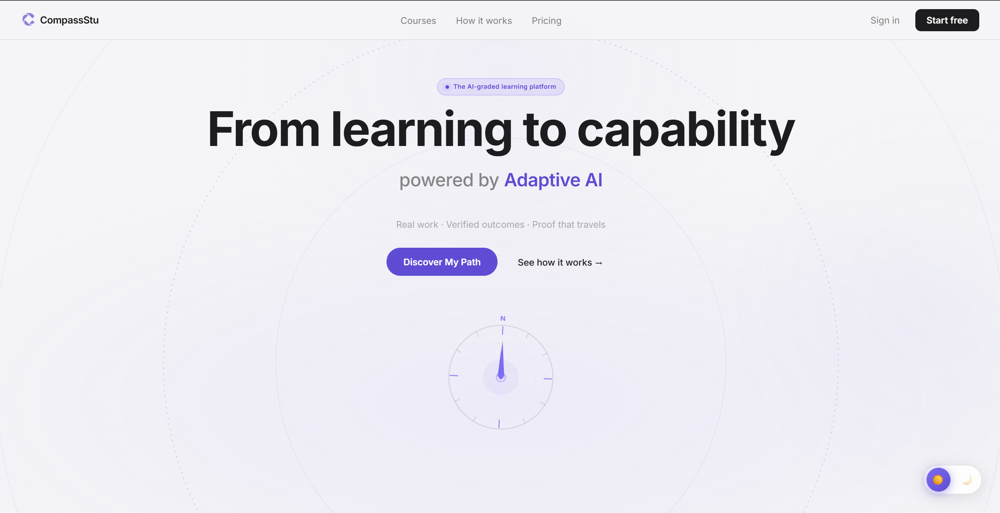
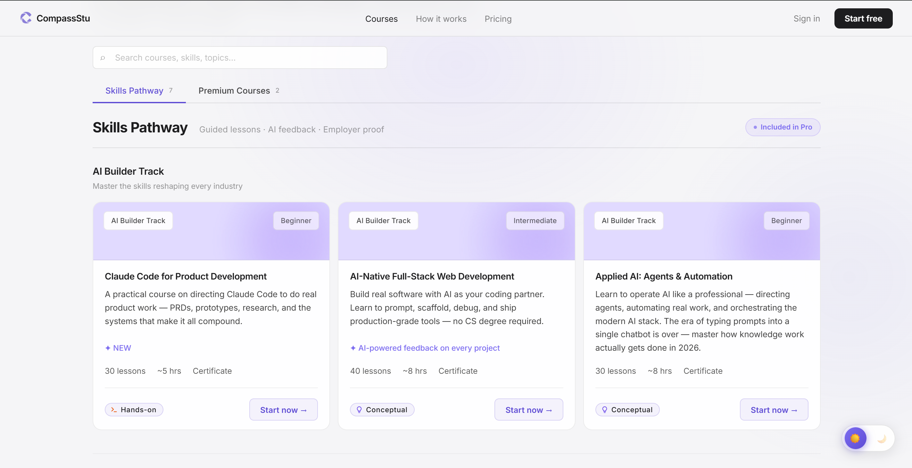
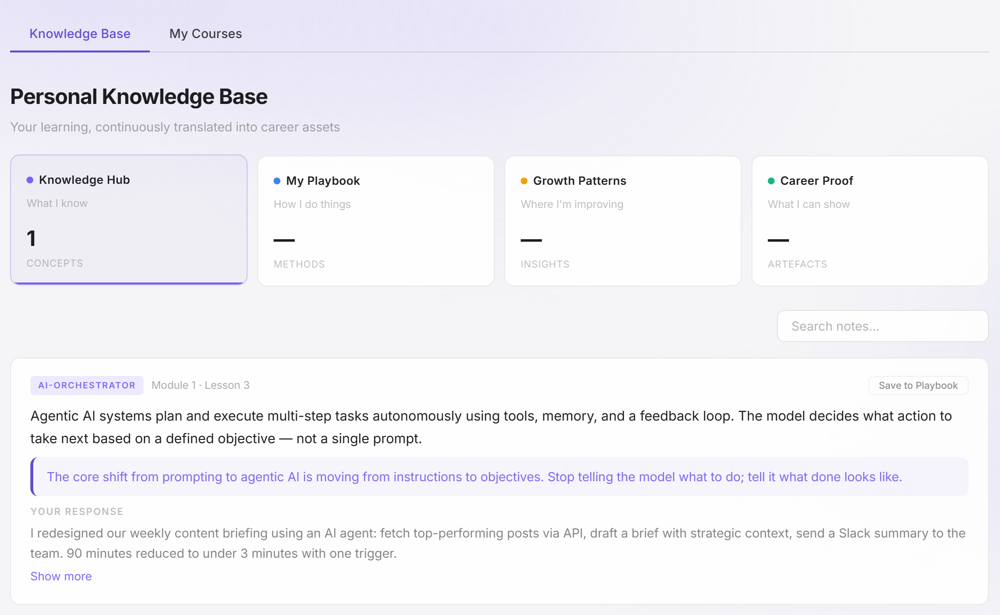

CompassStu

A learning platform built to produce candidates, not completions.
Most platforms measure progress in videos watched.
01 Overview
CompassStu measures it in work demonstrated — AI-graded against a four-dimension rubric.
Scored, signed, and shareable as a single URL an employer can verify in a click.
Time-stamped. Immutable.
One runtime. Three learning engines.
Adaptive paths. Fixed standard.


Section